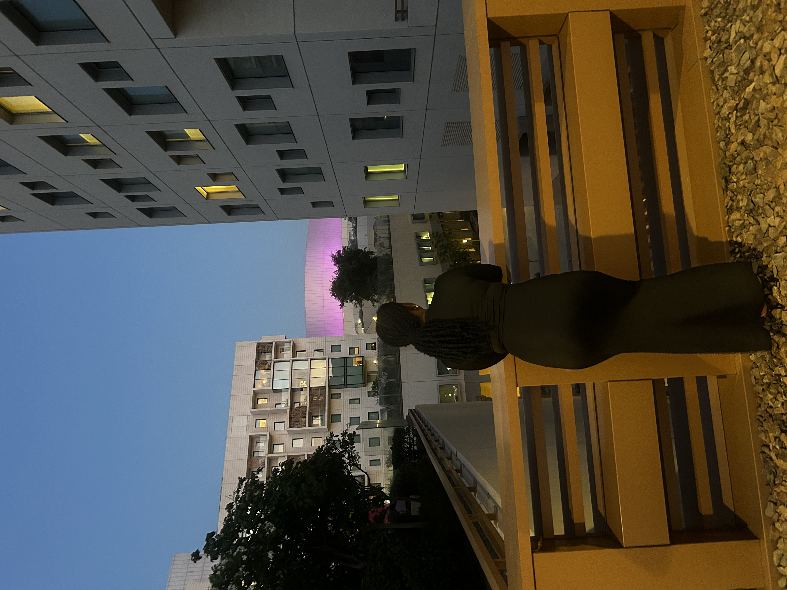
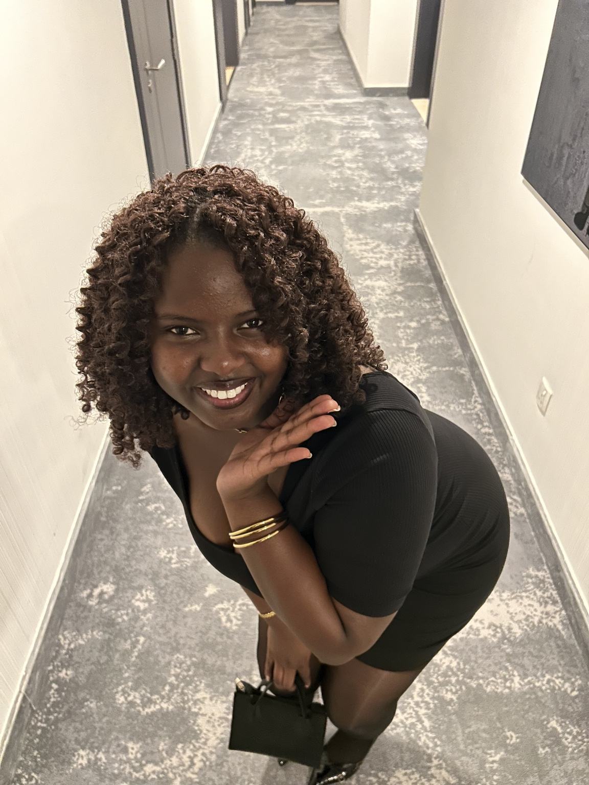
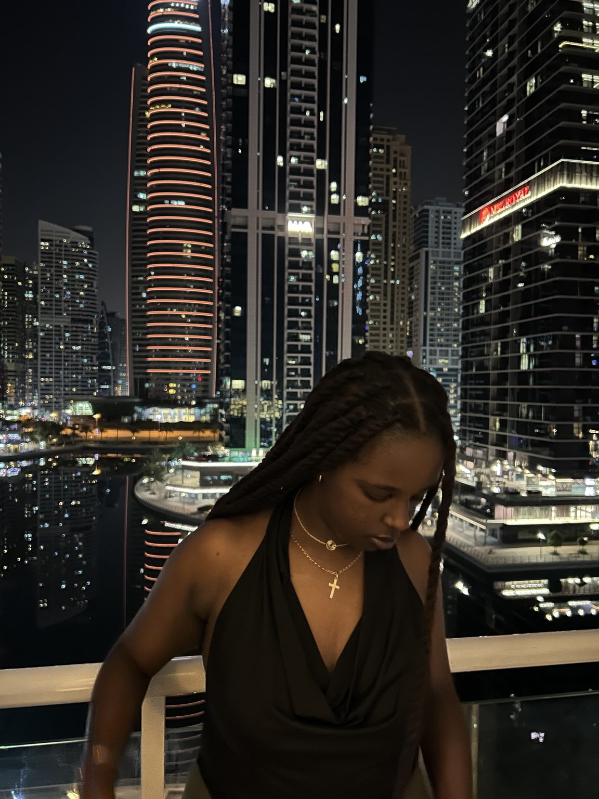
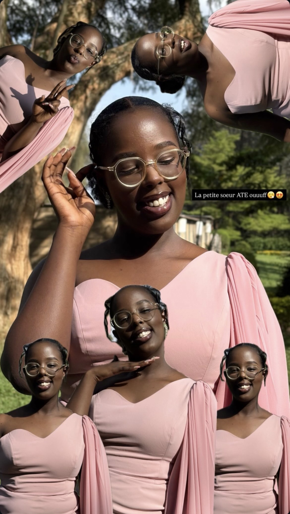
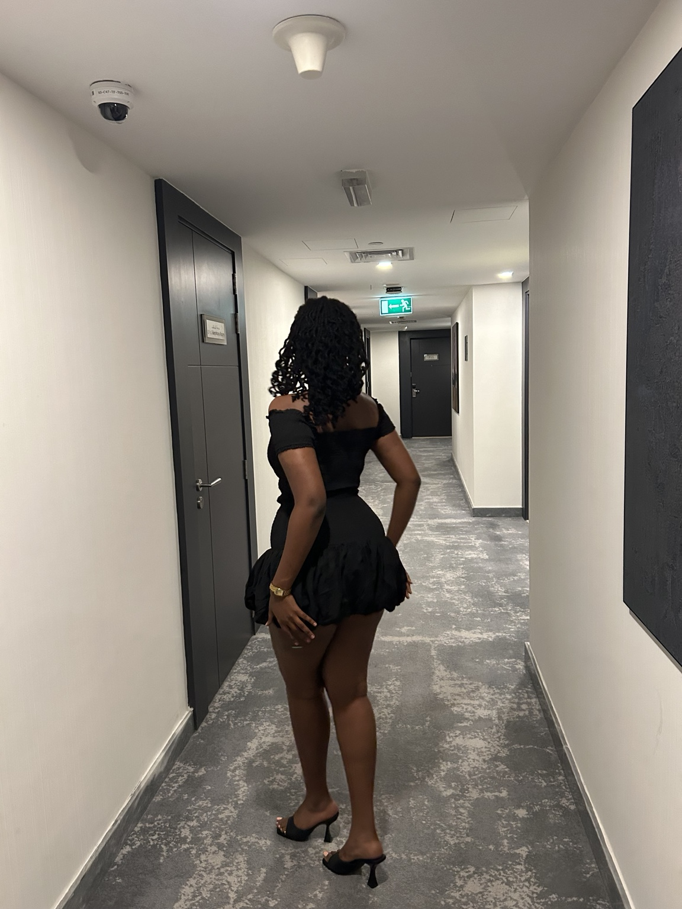
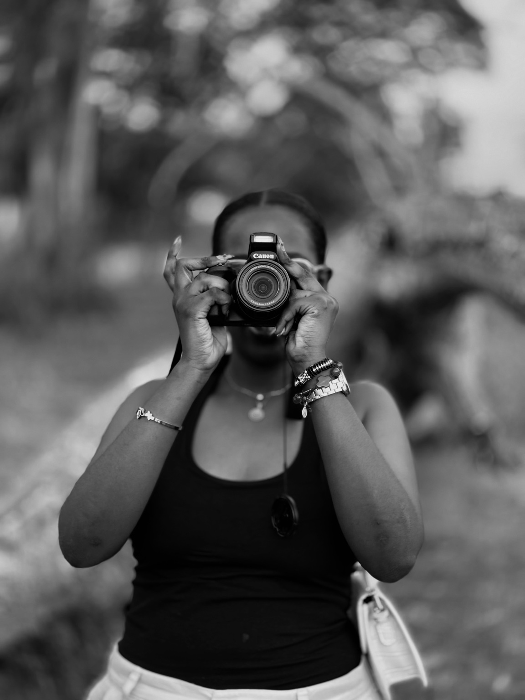

01
A personal visual diary · 2026
Life, in
frames.
A collection of places, people, personal style, and the little details that make a moment stay.
Explore selected work ↘
The visual archive
Selected moments
Personal work / ongoing

02
03
04
05
06A point of view
Not everything needs to be perfect. It needs to feel something.
I’m drawn to the moments in between the big ones: the dim light at the edge of the day, the outfit before going out, the city after sunset, the everyday scenes that become memories. This portfolio is a record of looking closely.
Moving pictures
Life in motion
Short-form video / visual diary
▶
A day, cut into moments
City diary · Vertical video
▶
The everyday edit
Daily life · Vertical video
▶
People, energy, memory
People & movement · Vertical video
A little about me
Curious by
nature.
I’m Meira — a creative observer with an interest in visual storytelling, personal style, digital culture, and the way images can bring people into a moment.
This is an evolving collection of things I make, notice, and want to remember. Some pieces are polished; others are deliberately personal. Together, they reflect how I see the world.
Visual storytellingShort-form videoPhotographyCreative editingDigital culture
Have something in mind?
Let’s make
a moment.
Open to creative projects, collaborations, and new ideas. I’d love to hear what you’re working on.
Start a conversation ↗